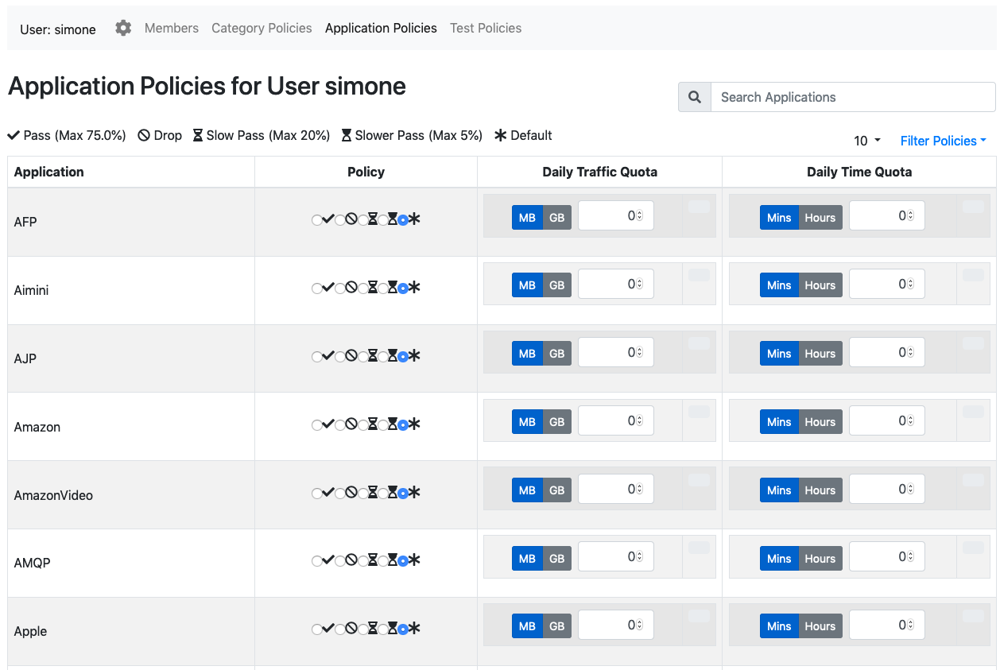
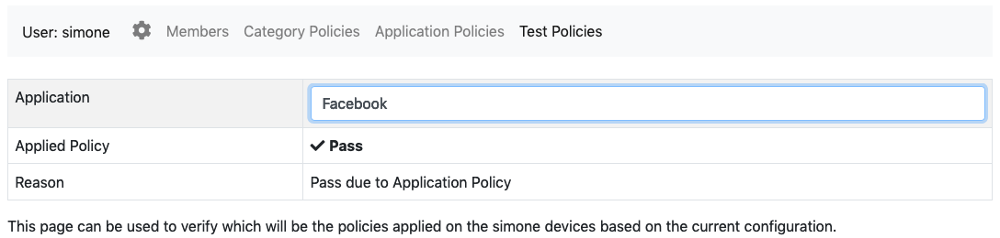
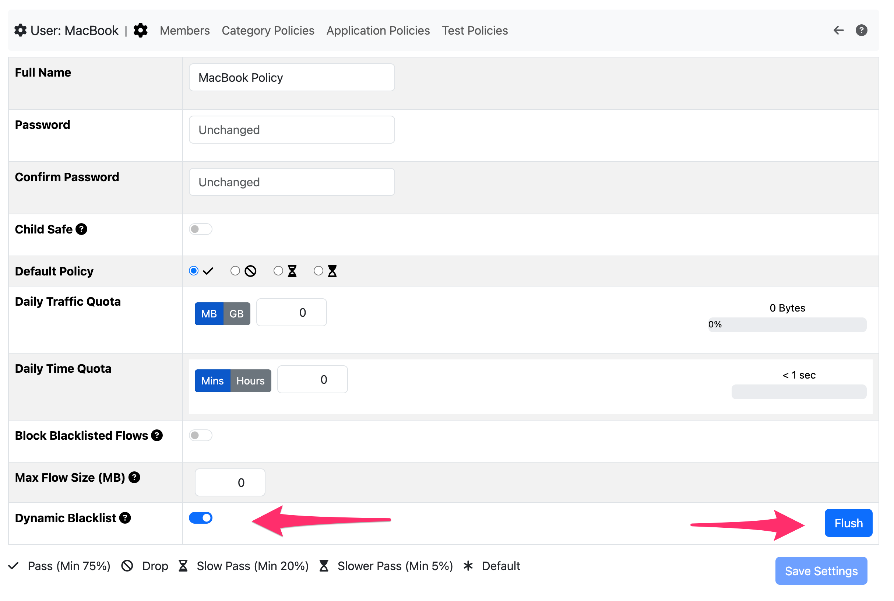

Политика
С помощью политик nEdge можно настроить индивидуальные правила для блокировки или ограничения трафика пользователей.
Политики доступны с тремя уровнями детализации:
Политика пользовательских приложений: предоставляет правила для пользовательских приложений.
Политика категорий пользователей: предоставляет правила для категорий пользователей.
Резервная политика пользователя: предоставляет пользователю правило по умолчанию.
Политика приложения/категории

Страница настройки политик пользователя
Политика приложения или категории имеет следующие поля:
политика: указывает, следует ли ограничить или заблокировать трафик приложения.
А суточная квота трафика: лимит ежедневного трафика указанного приложения.
А дневная квота времени: ограничение ежедневного использования времени указанным приложением.
Квоты
Все квоты сбрасываются ежедневно в полночь. Квоты не могут быть применены к пользователю «Не назначено».

Активные квоты пользователей можно просмотреть, нажав кнопку «Просмотреть квоты» для пользователя на странице «Пользователи».
Квота для данного приложения или категории будет отображаться только в том случае, если для него был некоторый трафик с момента полночь. Все квоты пользователей можно сбросить вручную, нажав кнопку «Сбросить квоты».
Приоритет
Политики применяются со следующим приоритетом:
Если политика приложения определена, она применяется.
Если для политики приложения установлено значение По умолчанию и определена категориальная политика, затем применяется политика категорий
Если и для приложения, и для категории установлено значение По умолчанию, тогда Резервная политика из пользователь применен
В качестве примера предположим, что Социальная сеть политика настроена на Медленный проходи Фейсбук политика отказаться, весь поток Facebook будет прекращен, в то время как другие социальные сети, такие как Twitter, будут отключены. пройти, и они будут ограничены в соответствии с Медленный проход класс пропускной способности.
Существует простой способ проверить, какая политика будет применена к тому или иному приложению, — это страница проверки политик.

Тестовая страница политик
Максимальный размер потока
Вы можете указать максимальный размер потока, при превышении которого поток будет блокироваться автоматически. Если значение установлено на 0 (zero), блокировка не применяется.
В этом случае вы включаете проверку потока «Нарушение политики». Предупреждение генерируется каждый раз, когда поток блокируется из-за максимального размера потока.
Динамический черный список
Вы можете определить черные списки для каждого пользователя на основе максимального размера заблокированных потоков.

Пример, если поток от хоста A (пользователь A1) -> хост B (пользователь B1) превышает указанный максимальный размер потока для пользователя A1, хост B добавляется в динамический черный список. Это означает, что будущие потоки, нацеленные на хост B, будут автоматически заблокированы благодаря этому динамическому черному списку. Черный список не сохраняется при перезапуске, и его можно очистить, нажав кнопку очистки.